The lessons learned from optimizing binary search can be applied to a broad range of data structures.
In this article, instead of trying to optimize something from the STL again, we focus on segment trees, the structures that may be unfamiliar to most normal programmers and perhaps even most computer science researchers1, but that are used very extensively in programming competitions for their speed and simplicity of implementation.
(If you already know the context, jump straight to the last section for the novelty: the wide segment tree that works 4 to 12 times faster than the Fenwick tree.)
#Dynamic Prefix Sum
Segment trees are cool and can do lots of different things, but in this article, we will focus on their simplest non-trivial application — the dynamic prefix sum problem:
void add(int k, int x); // react to a[k] += x (zero-based indexing)
int sum(int k); // return the sum of the first k elements (from 0 to k - 1)
As we have to support two types of queries, our optimization problem becomes multi-dimensional, and the optimal solution depends on the distribution of queries. For example, if one type of the queries were extremely rare, we would only optimize for the other, which is relatively easy to do:
- If we only cared about the cost of updating the array, we would store it as it is and calculate the sum directly on each
sumquery. - If we only cared about the cost of prefix sum queries, we would keep it ready and re-calculate them entirely from scratch on each update.
Both of these options perform $O(1)$ work on one query type but $O(n)$ work on the other. When the query frequencies are relatively close, we can trade off some performance on one type of query for increased performance on the other. Segment trees let you do exactly that, achieving the equilibrium of $O(\log n)$ work for both queries.
#Segment Tree Structure
The main idea behind segment trees is this:
- calculate the sum of the entire array and write it down somewhere;
- split the array into two halves, calculate the sum on both halves, and also write them down somewhere;
- split these halves into halves, calculate the total of four sums on them, and also write them down;
- …and so on, until we recursively reach segments of length one.
These computed subsegment sums can be logically represented as a binary tree — which is what we call a segment tree:
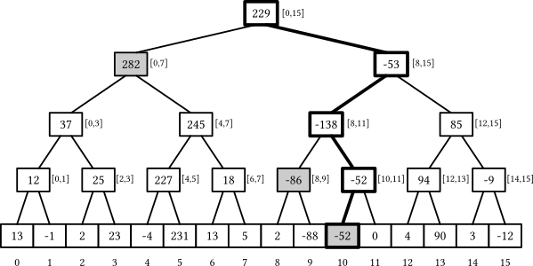
Segment trees have some nice properties:
- If the underlying array has $n$ elements, the segment tree has exactly $(2n - 1)$ nodes — $n$ leaves and $(n - 1)$ internal nodes — because each internal node splits a segment in two, and you only need $(n - 1)$ of them to completely split the original $[0, n-1]$ range.
- The height of the tree is $\Theta(\log n)$: on each next level starting from the root, the number of nodes roughly doubles and the size of their segments roughly halves.
- Each segment can be split into $O(\log n)$ non-intersecting segments that correspond to the nodes of the segment tree: you need at most two from each layer.
When $n$ is not a perfect power of two, not all levels are filled entirely — the last layer may be incomplete — but the truthfulness of these properties remains unaffected. The first property allows us to use only $O(n)$ memory to store the tree, and the last two let us solve the problem in $O(\log n)$ time:
- The
add(k, x)query can be handled by adding the valuexto all nodes whose segments contain the elementk, and we’ve already established that there are only $O(\log n)$ of them. - The
sum(k)query can be answered by finding all nodes that collectively compose the[0, k)prefix and summing the values stored in them — and we’ve also established that there would be at most $O(\log n)$ of them.
But this is still theory. As we’ll see later, there are remarkably many ways one can implement this data structure.
#Pointer-Based Implementation
The most straightforward way to implement a segment tree is to store everything we need in a node explicitly: including the array segment boundaries, the sum, and the pointers to its children.
If we were at the “Introduction to OOP” class, we would implement a segment tree recursively like this:
struct segtree {
int lb, rb; // the range this node is responsible for
int s = 0; // the sum of elements [lb, rb)
segtree *l = nullptr, *r = nullptr; // pointers to its children
segtree(int lb, int rb) : lb(lb), rb(rb) {
if (lb + 1 < rb) { // if the node is not a leaf, create children
int m = (lb + rb) / 2;
l = new segtree(lb, m);
r = new segtree(m, rb);
}
}
void add(int k, int x) { /* react to a[k] += x */ }
int sum(int k) { /* compute the sum of the first k elements */ }
};
If we needed to build it over an existing array, we would rewrite the body of the constructor like this:
if (lb + 1 == rb) {
s = a[lb]; // the node is a leaf -- its sum is just the element a[lb]
} else {
int t = (lb + rb) / 2;
l = new segtree(lb, t);
r = new segtree(t, rb);
s = l->s + r->s; // we can use the sums of children that we've just calculated
}
The construction time is of no significant interest to us, so to reduce the mental burden, we will just assume that the array is zero-initialized in all future implementations.
Now, to implement add, we need to descend down the tree until we reach a leaf node, adding the delta to the s fields:
void add(int k, int x) {
s += x;
if (l != nullptr) { // check whether it is a leaf node
if (k < l->rb)
l->add(k, x);
else
r->add(k, x);
}
}
To calculate the sum on a segment, we can check if the query covers the current segment fully or doesn’t intersect with it at all — and return the result for this node right away. If neither is the case, we recursively pass the query to the children so that they figure it out themselves:
int sum(int lq, int rq) {
if (rb <= lq && rb <= rq) // if we're fully inside the query, return the sum
return s;
if (rq <= lb || lq >= rb) // if we don't intersect with the query, return zero
return 0;
return l->sum(lq, rq) + r->sum(lq, rq);
}
This function visits a total of $O(\log n)$ nodes because it only spawns children when a segment only partially intersects with the query, and there are at most $O(\log n)$ of such segments.
For prefix sums, these checks can be simplified as the left border of the query is always zero:
int sum(int k) {
if (rb <= k)
return s;
if (lb >= k)
return 0;
return l->sum(k) + r->sum(k);
}
Since we have two types of queries, we also got two graphs to look at:
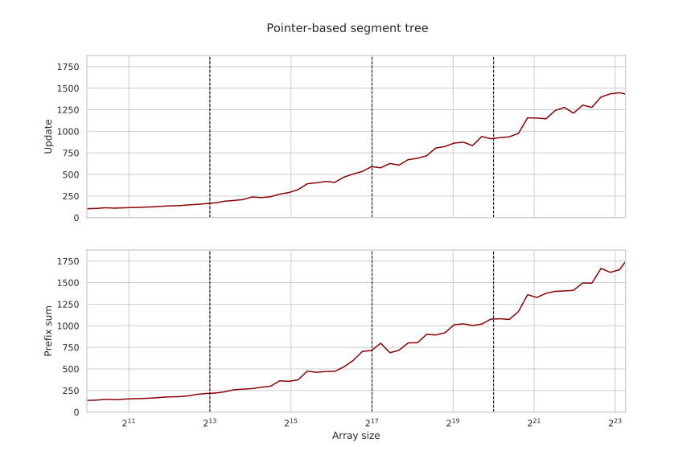
While this object-oriented implementation is quite good in terms of software engineering practices, there are several aspects that make it terrible in terms of performance:
- Both query implementations use recursion — although the
addquery can be tail-call optimized. - Both query implementations use unpredictable branching, which stalls the CPU pipeline.
- The nodes store extra metadata. The structure takes $4+4+4+8+8=28$ bytes and gets padded to 32 bytes for memory alignment reasons, while only 4 bytes are really necessary to hold the integer sum.
- Most importantly, we are doing a lot of pointer chasing: we have to fetch the pointers to the children to descend into them, even though we can infer, ahead of time, which segments we’ll need just from the query.
Pointer chasing outweighs all other issues by orders of magnitude — and to negate it, we need to get rid of pointers, making the structure implicit.
#Implicit Segment Trees
As a segment tree is a type of binary tree, we can use the Eytzinger layout to store its nodes in one large array and use index arithmetic instead of explicit pointers to navigate it.
More formally, we define node $1$ to be the root, holding the sum of the entire array $[0, n)$. Then, for every node $v$ corresponding to the range $[l, r]$, we define:
- the node $2v$ to be its left child corresponding to the range $[l, \lfloor \frac{l+r}{2} \rfloor)$;
- the node $(2v+1)$ to be its right child corresponding to the range $[\lfloor \frac{l+r}{2} \rfloor, r)$.
When $n$ is a perfect power of two, this layout packs the entire tree very nicely:
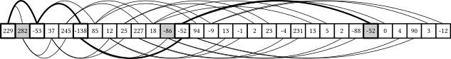
However, when $n$ is not a power of two, the layout stops being compact: although we still have exactly $(2n - 1)$ nodes regardless of how we split segments, they are no longer mapped perfectly to the $[1, 2n)$ range.
For example, consider what happens when we descend to the rightmost leaf in a segment tree of size $17 = 2^4 + 1$:
- we start with the root numbered $1$ representing the range $[0, 16]$,
- we go to node $3 = 2 \times 1 + 1$ representing the range $[8, 16]$,
- we go to node $7 = 2 \times 2 + 1$ representing the range $[12, 16]$,
- we go to node $15 = 2 \times 7 + 1$ representing the range $[14, 16]$,
- we go to node $31 = 2 \times 15 + 1$ representing the range $[15, 16]$,
- and we finally reach node $63 = 2 \times 31 + 1$ representing the range $[16, 16]$.
So, as $63 > 2 \times 17 - 1 = 33$, there are some empty spaces in the layout, but the structure of the tree is still the same, and its height is still $O(\log n)$. For now, we can ignore this problem and just allocate a larger array for storing the nodes — it can be shown that the index of the rightmost leaf never exceeds $4n$, so allocating that many cells will always suffice:
int t[4 * N]; // contains the node sums
Now, to implement add, we create a similar recursive function but using index arithmetic instead of pointers. Since we’ve also stopped storing the borders of the segment in the nodes, we need to re-calculate them and pass them as parameters for each recursive call:
void add(int k, int x, int v = 1, int l = 0, int r = N) {
t[v] += x;
if (l + 1 < r) {
int m = (l + r) / 2;
if (k < m)
add(k, x, 2 * v, l, m);
else
add(k, x, 2 * v + 1, m, r);
}
}
The implementation of the prefix sum query is largely the same:
int sum(int k, int v = 1, int l = 0, int r = N) {
if (l >= k)
return 0;
if (r <= k)
return t[v];
int m = (l + r) / 2;
return sum(k, 2 * v, l, m)
+ sum(k, 2 * v + 1, m, r);
}
Passing around five variables in a recursive function seems clumsy, but the performance gains are clearly worth it:
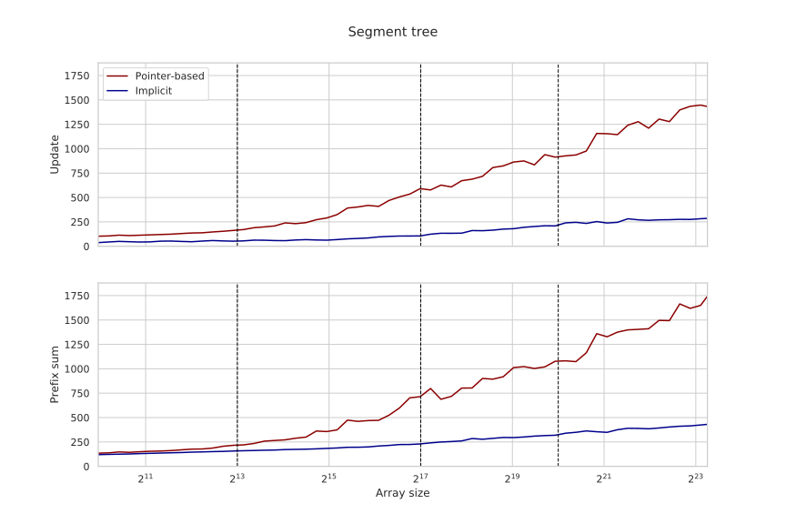
Apart from requiring much less memory, which is good for fitting into the CPU caches, the main advantage of this implementation is that we can now make use of the memory parallelism and fetch the nodes we need in parallel, considerably improving the running time for both queries.
To improve the performance further, we can:
- manually optimize the index arithmetic (e.g., noticing that we need to multiply
vby2either way), - replace division by two with an explicit binary shift (because compilers aren’t always able to do it themselves),
- and, most importantly, get rid of recursion and make the implementation fully iterative.
As add is tail-recursive and has no return value, it is easy turn it into a single while loop:
void add(int k, int x) {
int v = 1, l = 0, r = N;
while (l + 1 < r) {
t[v] += x;
v <<= 1;
int m = (l + r) >> 1;
if (k < m)
r = m;
else
l = m, v++;
}
t[v] += x;
}
Doing the same for the sum query is slightly harder as it has two recursive calls. The key trick is to notice that when we make these calls, one of them is guaranteed to terminate immediately as k can only be in one of the halves, so we can simply check this condition before descending the tree:
int sum(int k) {
int v = 1, l = 0, r = N, s = 0;
while (true) {
int m = (l + r) >> 1;
v <<= 1;
if (k >= m) {
s += t[v++];
if (k == m)
break;
l = m;
} else {
r = m;
}
}
return s;
}
This doesn’t improve the performance for the update query by a lot (because it was tail-recursive, and the compiler already performed a similar optimization), but the running time on the prefix sum query has roughly halved for all problem sizes:
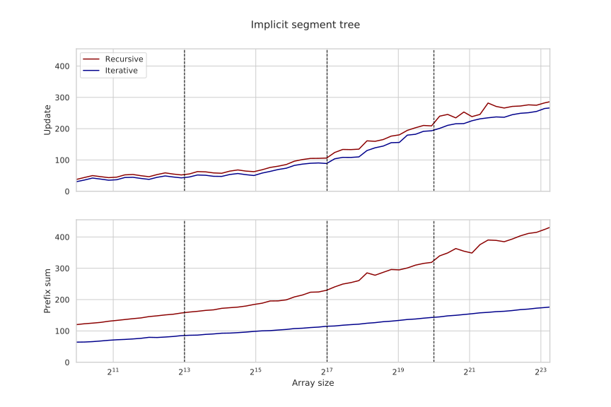
This implementation still has some problems: we are using up to twice as much memory as necessary, we have costly branching, and we have to maintain and re-compute array bounds on each iteration. To get rid of these problems, we need to change our approach a little bit.
#Bottom-Up Implementation
Let’s change the definition of the implicit segment tree layout. Instead of relying on the parent-to-child relationship, we first forcefully assign all the leaf nodes numbers in the $[n, 2n)$ range, and then recursively define the parent of node $k$ to be equal to node $\lfloor \frac{k}{2} \rfloor$.
This structure is largely the same as before: you can still reach the root (node $1$) by dividing any node number by two, and each node still has at most two children: $2k$ and $(2k + 1)$, as anything else yields a different parent number when floor-divided by two. The advantage we get is that we’ve forced the last layer to be contiguous and start from $n$, so we can use the array of half the size:
int t[2 * N];
When $n$ is a power of two, the structure of the tree is exactly the same as before and when implementing the queries, we can take advantage of this bottom-up approach and start from the $k$-th leaf node (simply indexed $N + k$) and ascend the tree until we reach the root:
void add(int k, int x) {
k += N;
while (k != 0) {
t[k] += x;
k >>= 1;
}
}
To calculate the sum on the $[l, r)$ subsegment, we can maintain pointers to the first and the last element that needs to be added, increase/decrease them respectively when we add a node and stop after they converge to the same node (which would be their least common ancestor):
int sum(int l, int r) {
l += N;
r += N - 1;
int s = 0;
while (l <= r) {
if ( l & 1) s += t[l++]; // l is a right child: add it and move to a cousin
if (~r & 1) s += t[r--]; // r is a left child: add it and move to a cousin
l >>= 1, r >>= 1;
}
return s;
}
Surprisingly, both queries work correctly even when $n$ is not a power of two. To understand why, consider a 13-element segment tree:
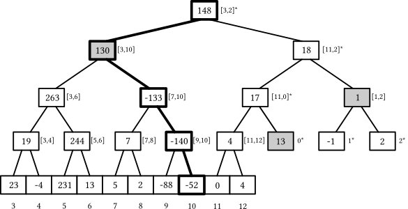
The first index of the last layer is always a power of two, but when the array size is not a perfect power of two, some prefix of the leaf elements gets wrapped around to the right side of the tree. Magically, this fact does not pose a problem for our implementation:
- The
addquery still updates its parent nodes, even though some of them correspond to some prefix and some suffix of the array instead of a contiguous subsegment. - The
sumquery still computes the sum on the correct subsegment, even whenlis on that wrapped prefix and logically “to the right” ofrbecause eventuallylbecomes the last node on a layer and gets incremented, suddenly jumping to the first element of the next layer and proceeding normally after adding just the right nodes on the wrapped-around part of the tree (look at the dimmed nodes in the illustration).
Compared to the top-down approach, we use half the memory and don’t have to maintain query ranges, which results in simpler and consequently faster code:
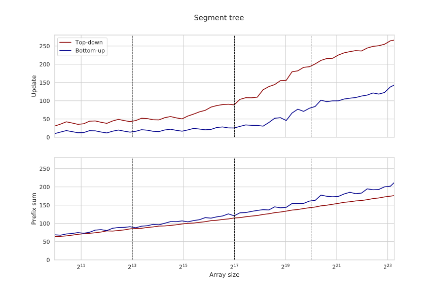
When running the benchmarks, we use the sum(l, r) procedure for computing a general subsegment sum and just fix l equal to 0. To achieve higher performance on the prefix sum query, we want to avoid maintaining l and only move the right border like this:
int sum(int k) {
int s = 0;
k += N - 1;
while (k != 0) {
if (~k & 1) // if k is a right child
s += t[k--];
k = k >> 1;
}
return s;
}
In contrast, this prefix sum implementation doesn’t work unless $n$ is not a power of two — because k could be on that wrapped-around part, and we’d sum almost the entire array instead of a small prefix.
To make it work for arbitrary array sizes, we can permute the leaves so that they are in the left-to-right logical order in the last two layers of the tree. In the example above, this would mean adding $3$ to all leaf indexes and then moving the last three leaves one level higher by subtracting $13$.
In the general case, this can be done using predication in a few cycles like this:
const int last_layer = 1 << __lg(2 * N - 1);
// calculate the index of the leaf k
int leaf(int k) {
k += last_layer;
k -= (k >= 2 * N) * N;
return k;
}
When implementing the queries, all we need to do is to call the leaf function to get the correct leaf index:
void add(int k, int x) {
k = leaf(k);
while (k != 0) {
t[k] += x;
k >>= 1;
}
}
int sum(int k) {
k = leaf(k - 1);
int s = 0;
while (k != 0) {
if (~k & 1)
s += t[k--];
k >>= 1;
}
return s;
}
The last touch: by replacing the s += t[k--] line with predication, we can make the implementation branchless (except for the last branch — we still need to check the loop condition):
int sum(int k) {
k = leaf(k - 1);
int s = 0;
while (k != 0) {
s += (~k & 1) ? t[k] : 0; // will be replaced with a cmov
k = (k - 1) >> 1;
}
return s;
}
When combined, these optimizations make the prefix sum queries run much faster:
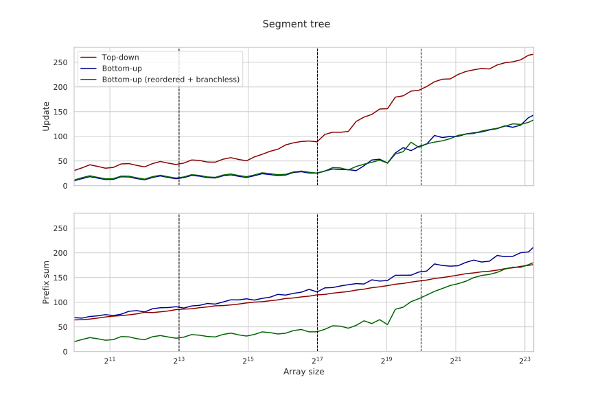
Notice that the bump in the latency for the prefix sum query starts at $2^{19}$ and not at $2^{20}$, the L3 cache boundary. This is because we are still storing $2n$ integers and also fetching the t[k] element regardless of whether we will add it to s or not. We can actually solve both of these problems.
#Fenwick trees
Implicit structures are great: they avoid pointer chasing, allow visiting all the relevant nodes in parallel, and take less space as they don’t store metadata in nodes. Even better than implicit structures are succinct structures: they only require the information-theoretical minimum space to store the structure, using only $O(1)$ additional memory.
To make a segment tree succinct, we need to look at the values stored in the nodes and search for redundancies — the values that can be inferred from others — and remove them. One way to do this is to notice that in every implementation of prefix sum, we’ve never used the sums stored in right children — therefore, for computing prefix sums, such nodes are redundant:
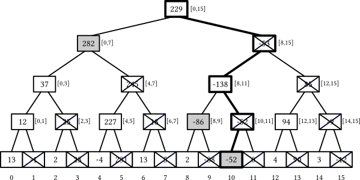
The Fenwick tree (also called binary indexed tree — soon you’ll understand why) is a type of segment tree that uses this consideration and gets rid of all right children, essentially removing every second node in each layer and making the total node count the same as the underlying array.
int t[N + 1]; // +1 because we use one-based indexing
To store these segment sums compactly, the Fenwick tree ditches the Eytzinger layout: instead, in place of every element $k$ that would be a leaf in the last layer of a segment tree, it stores the sum of its first non-removed ancestor. For example:
- the element $7$ would hold the sum on the $[0, 7]$ range ($282$),
- the element $9$ would hold the sum on the $[8, 9]$ range ($-86$),
- the element $10$ would hold the sum on the $[10, 10]$ range ($-52$, the element itself).
How to compute this range for a given element $k$ (the left boundary, to be more specific: the right boundary is always the element $k$ itself) quicker than simulating the descend down the tree? Turns out, there is a smart bit trick that works when the tree size is a power of two and we use one-based indexing — just remove the least significant bit of the index:
- the left bound for element $7 + 1 = 8 = 1000_2$ is $0000_2 = 0$,
- the left bound for element $9 + 1 = 10 = 1010_2$ is $1000_2 = 8$,
- the left bound for element $10 + 1 = 11 = 1011_2$ is $1010_2 = 10$.
And to get the last set bit of an integer, we can use this procedure:
int lowbit(int x) {
return x & -x;
}
This trick works by the virtue of how signed numbers are stored in binary using two’s complement. When we compute -x, we implicitly subtract it from a large power of two: some prefix of the number flips, some suffix of zeros at the end remains, and the only one-bit that stays unchanged is the last set bit — which will be the only one surviving x & -x. For example:
+90 = 64 + 16 + 8 + 2 = (0)10110
-90 = 00000 - 10110 = (1)01010
→ (+90) & (-90) = (0)00010
We’ve established what a Fenwick tree is just an array of size n where each element k is defined to be the sum of elements from k - lowbit(k) + 1 and k inclusive in the original array, and now it’s time to implement some queries.
Implementing the prefix sum query is easy. The t[k] holds the sum we need except for the first k - lowbit(k) elements, so we can just add it to the result and then jump to k - lowbit(k) and continue doing this until we reach the beginning of the array:
int sum(int k) {
int s = 0;
for (; k != 0; k -= lowbit(k))
s += t[k];
return s;
}
Since we are repeatedly removing the lowest set bit from k, and also since this procedure is equivalent to visiting the same left-child nodes in a segment tree, each sum query can touch at most $O(\log n)$ nodes:
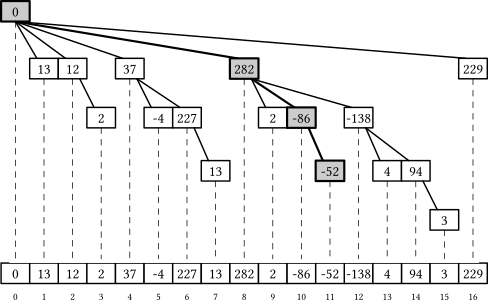
To slightly improve the performance of the sum query, we use k &= k - 1 to remove the lowest bit in one go, which is one instruction faster than k -= k & -k:
int sum(int k) {
int s = 0;
for (; k != 0; k &= k - 1)
s += t[k];
return s;
}
Unlike all previous segment tree implementations, a Fenwick tree is a structure where it is easier and more efficient to calculate the sum on a subsegment as the difference of two prefix sums:
// [l, r)
int sum (int l, int r) {
return sum(r) - sum(l);
}
The update query is easier to code but less intuitive. We need to add a value x to all nodes that are left-child ancestors of leaf k. Such nodes have indices m larger than k but m - lowbit(m) < k so that k is included in their ranges.
All such indices need to have a common prefix with k, then a 1 where it was 0 in k, and then a suffix of zeros so that that 1 canceled and the result of m - lowbit(m) is less than k. All such indices can be generated iteratively like this:
void add(int k, int x) {
for (k += 1; k <= N; k += k & -k)
t[k] += x;
}
Repeatedly adding the lowest set bit to k makes it “more even” and lifts it to its next left-child segment tree ancestor:
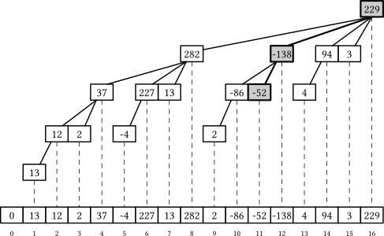
Now, if we leave all the code as it is, it works correctly even when $n$ is not a power of two. In this case, the Fenwick tree is not equivalent to a segment tree of size $n$ but to a forest of up to $O(\log n)$ segment trees of power-of-two sizes — or to a single segment tree padded with zeros to a large power of two, if you like to think this way. In either case, all procedures still work correctly as they never touch anything outside the $[1, n]$ range.
The performance of the Fenwick tree is similar to the optimized bottom-up segment tree for the update queries and slightly faster for the prefix sum queries:
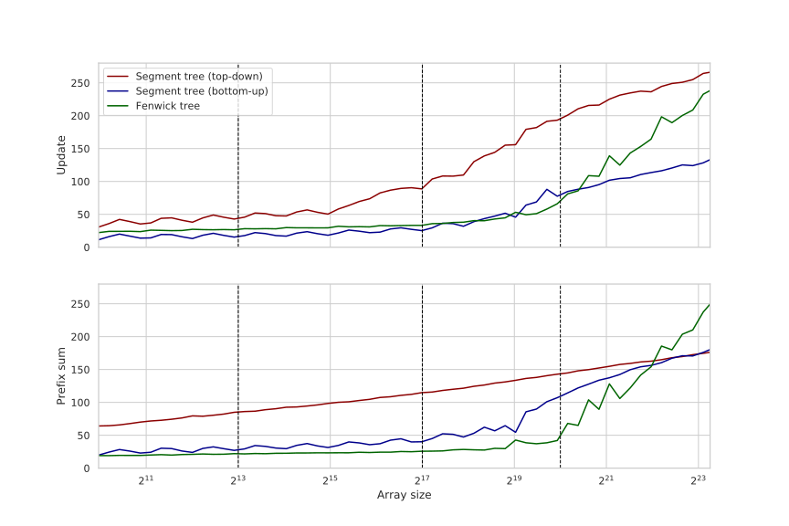
There is one weird thing on the graph. After we cross the L3 cache boundary, the performance takes off very rapidly. This is a cache associativity effect: the most frequently used cells all have their indices divisible by large powers of two, so they get aliased to the same cache set, kicking each other out and effectively reducing the cache size.
One way to negate this effect is to insert “holes” in the layout like this:
inline constexpr int hole(int k) {
return k + (k >> 10);
}
int t[hole(N) + 1];
void add(int k, int x) {
for (k += 1; k <= N; k += k & -k)
t[hole(k)] += x;
}
int sum(int k) {
int res = 0;
for (; k != 0; k &= k - 1)
res += t[hole(k)];
return res;
}
Computing the hole function is not on the critical path between iterations, so it does not introduce any significant overhead but completely removes the cache associativity problem and shrinks the latency by up to 3x on large arrays:
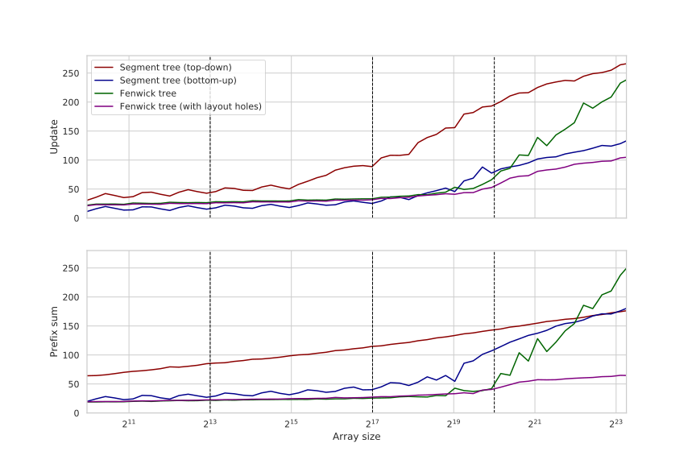
Fenwick trees are fast, but there are still other minor issues with them. Similar to binary search, the temporal locality of their memory accesses is not the greatest, as rarely accessed elements are grouped with the most frequently accessed ones. Fenwick trees also execute a non-constant number of iterations and have to perform end-of-loop checks, very likely causing a branch misprediction — although just a single one.
There are probably still some things to optimize, but we are going to leave it there and focus on an entirely different approach, and if you know S-trees, you probably already know where this is headed.
#Wide Segment Trees
Here is the main idea: if the memory system is fetching a full cache line for us anyway, let’s fill it to the maximum with information that lets us process the query quicker. For segment trees, this means storing more than one data point in a node. This lets us reduce the tree height and perform fewer iterations when descending or ascending it:
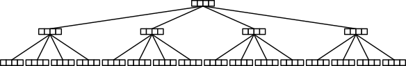
We will use the term wide (B-ary) segment tree to refer to this modification.
To implement this layout, we can use a similar constexpr-based approach we used in S+ trees:
const int b = 4, B = (1 << b); // cache line size (in integers, not bytes)
// the height of the tree over an n-element array
constexpr int height(int n) {
return (n <= B ? 1 : height(n / B) + 1);
}
// where the h-th layer starts
constexpr int offset(int h) {
int s = 0, n = N;
while (h--) {
n = (n + B - 1) / B;
s += n * B;
}
return s;
}
constexpr int H = height(N);
alignas(64) int t[offset(H)]; // an array for storing nodes
This way, we effectively reduce the height of the tree by approximately $\frac{\log_B n}{\log_2 n} = \log_2 B$ times ($\sim4$ times if $B = 16$), but it becomes non-trivial to implement in-node operations efficiently. For our problem, we have two main options:
- We could store $B$ sums in each node (for each of its $B$ children).
- We could store $B$ prefix sums in each node (the $i$-th being the sum of the first $(i + 1)$ children).
If we go with the first option, the add query would be largely the same as in the bottom-up segment tree, but the sum query would need to add up to $B$ scalars in each node it visits. And if we go with the second option, the sum query would be trivial, but the add query would need to add x to some suffix on each node it visits.
In either case, one operation would perform $O(\log_B n)$ operations, touching just one scalar in each node, while the other would perform $O(B \cdot \log_B n)$ operations, touching up to $B$ scalars in each node. We can, however, use SIMD to accelerate the slower operation, and since there are no fast horizontal reductions in SIMD instruction sets, but it is easy to add a vector to a vector, we will choose the second approach and store prefix sums in each node.
This makes the sum query extremely fast and easy to implement:
int sum(int k) {
int s = 0;
for (int h = 0; h < H; h++)
s += t[offset(h) + (k >> (h * b))];
return s;
}
The add query is more complicated and slower. We need to add a number only to a suffix of a node, and we can do this by masking out the positions that should not be modified.
We can pre-calculate a $B \times B$ array corresponding to $B$ such masks that tell, for each of $B$ positions within a node, whether a certain prefix sum value needs to be updated or not:
struct Precalc {
alignas(64) int mask[B][B];
constexpr Precalc() : mask{} {
for (int k = 0; k < B; k++)
for (int i = 0; i < B; i++)
mask[k][i] = (i > k ? -1 : 0);
}
};
constexpr Precalc T;
Apart from this masking trick, the rest of the computation is simple enough to be handled with GCC vector types only. When processing the add query, we just use these masks to bitwise-and them with the broadcasted x value to mask it and then add it to the values stored in the node:
typedef int vec __attribute__ (( vector_size(32) ));
constexpr int round(int k) {
return k & ~(B - 1); // = k / B * B
}
void add(int k, int x) {
vec v = x + vec{};
for (int h = 0; h < H; h++) {
auto a = (vec*) &t[offset(h) + round(k)];
auto m = (vec*) T.mask[k % B];
for (int i = 0; i < B / 8; i++)
a[i] += v & m[i];
k >>= b;
}
}
This speeds up the sum query by more than 10x and the add query by up to 4x compared to the Fenwick tree:
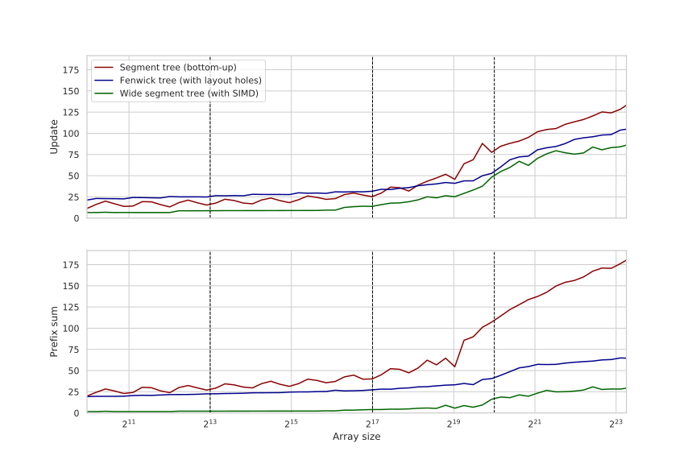
Unlike S-trees, the block size can be easily changed in this implementation (by literally changing one character). Expectedly, when we increase it, the update time also increases as we need to fetch more cache lines and process them, but the sum query time decreases as the height of the tree becomes smaller:
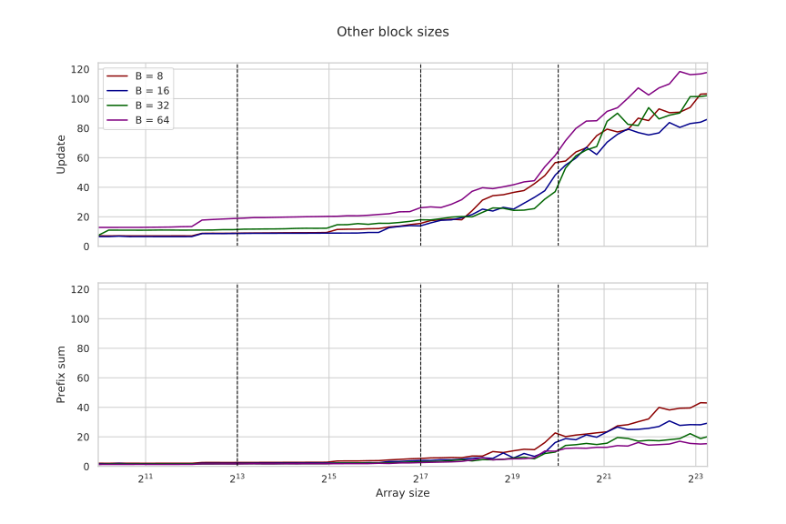
Similar to the S+ trees, the optimal memory layout probably has non-uniform block sizes, depending on the problem size and the distribution of queries, but we are not going to explore this idea and just leave the optimization here.
#Comparisons
Wide segment trees are significantly faster compared to other popular segment tree implementations:
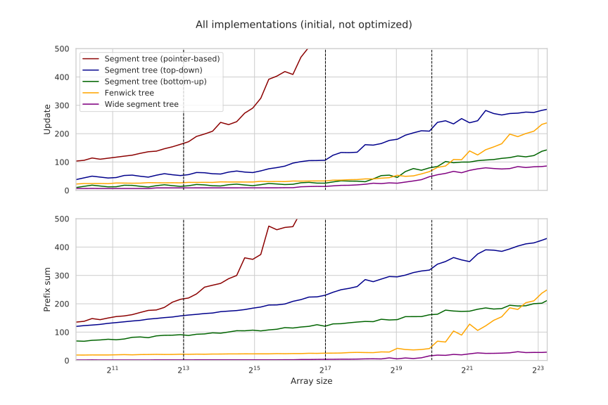
The relative speedup is in the orders of magnitude:
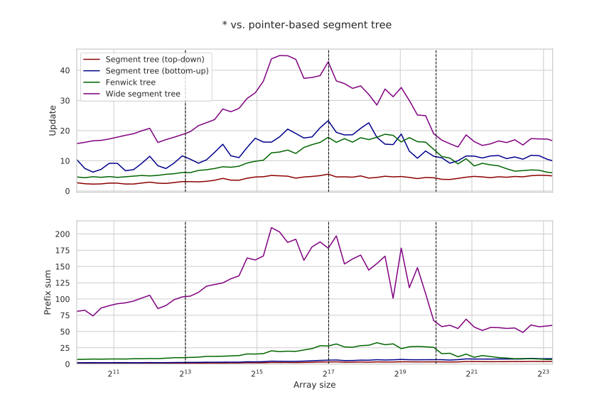
Compared to the original pointer-based implementation, the wide segment tree is up to 200 and 40 times faster for the prefix sum and update queries, respectively — although, for sufficiently large arrays, both implementations become purely memory-bound, and this speedup goes down to around 60 and 15 respectively.
#Modifications
We have only focused on the prefix sum problem for 32-bit integers — to make this already long article slightly less long and also to make the comparison with the Fenwick tree fair — but wide segment trees can be used for other common range operations, although implementing them efficiently with SIMD requires some creativity.
Disclaimer: I haven’t implemented any of these ideas, so some of them may be fatally flawed.
Other data types can be trivially supported by changing the vector type and, if they differ in size, the node size $B$ — which also changes the tree height and hence the total number of iterations for both queries.
It may also be that the queries have different limits on the updates and the prefix sum queries. For example, it is not uncommon to have only “$\pm 1$” update queries with a guarantee that the result of the prefix sum query always fits into a 32-bit integer. If the result could fit into 8 bits, we’d simply use a 8-bit char with block size of $B=64$ bytes, making the total tree height $\frac{\log_{16} n}{\log_{64} n} = \log_{16} 64 = 1.5$ times smaller and both queries proportionally faster.
Unfortunately, that doesn’t work in the general case, but we still have a way to speed up queries when the update deltas are small: we can buffer the updates queries. Using the same “$\pm 1$” example, we can make the branching factor $B=64$ as we wanted, and in each node, we store $B$ 32-bit integers, $B$ 8-bit signed chars, and a single 8-bit counter variable that starts at $127$ and decrements each time we update a node. Then, when we process the queries in nodes:
- For the update query, we add a vector of masked 8-bit plus-or-minus ones to the
chararray, decrement the counter, and, if it is zero, convert the values in thechararray to 32-bit integers, add them to the integer array, set thechararray to zero, and reset the counter back to 127. - For the prefix sum query, we visit the same nodes but add both
intandcharvalues to the result.
This update accumulation trick lets us increase the performance by up to 1.5x at the cost of using ~25% more memory.
Having a conditional branch in the add query and adding the char array to the int array is rather slow, but since we only have to do it every 127 iterations, it doesn’t cost us anything in the amortized sense. The processing time for the sum query increases, but not significantly — because it mostly depends on the slowest read rather than the number of iterations.
General range queries can be supported the same way as in the Fenwick tree: just decompose the range $[l, r)$ as the difference of two prefix sums $[0, r)$ and $[0, l)$.
This also works for some operations other than addition (multiplication modulo prime, xor, etc.), although they have to be reversible: there should be a way to quickly “cancel” the operation on the left prefix from the final result.
Non-reversible operations can also be supported, although they should still satisfy some other properties:
- They must be associative: $(a \circ b) \circ c = a \circ (b \circ c)$.
- They must have an identity element: $a \circ e = e \circ a = a$.
(Such algebraic structures are called monoids if you’re a snob.)
Unfortunately, the prefix sum trick doesn’t work when the operation is not reversible, so we have to switch to option one and store the results of these operations separately for each segment. This requires some significant changes to the queries:
- The update query should replace one scalar at the leaf, perform a horizontal reduction at the leaf node, and then continue upwards, replacing one scalar of its parent and so on.
- The range reduction query should, separately for left and right borders, calculate a vector with vertically reduced values on their paths, combine these two vectors into one, and then reduce it horizontally to return the final answer. Note that we still need to use masking to replace values outside of query with neutral elements, and this time, it probably requires some conditional moves/blending and either $B \times B$ precomputed masks or using two masks to account for both left and right borders of the query.
This makes both queries much slower — especially the reduction — but this should still be faster compared to the bottom-up segment tree.
Minimum is a nice exception where the update query can be made slightly faster if the new value of the element is less than the current one: we can skip the horizontal reduction part and just update $\log_B n$ nodes using a scalar procedure.
This works very fast when we mostly have such updates, which is the case, e.g., for the sparse-graph Dijkstra algorithm when we have more edges than vertices. For this problem, the wide segment tree can serve as an efficient fixed-universe min-heap.
Lazy propagation can be done by storing a separate array for the delayed operations in a node. To propagate the updates, we need to go top to bottom (which can be done by simply reversing the direction of the for loop and using k >> (h * b) to calculate the h-th ancestor), broadcast and reset the delayed operation value stored in the parent of the current node, and apply it to all values stored in the current node with SIMD.
One minor problem is that for some operations, we need to know the lengths of the segments: for example, when we need to support a sum and a mass assignment. It can be solved by either padding the elements so that each segment on a layer is uniform in size, pre-calculating the segment lengths and storing them in the node, or using predication to check for the problematic nodes (there will be at most one on each layer).
#Acknowledgements
Many thanks to Giulio Ermanno Pibiri for collaborating on this case study, which is largely based on his 2020 paper “Practical Trade-Offs for the Prefix-Sum Problem” co-authored with Rossano Venturini. I highly recommend reading the original article if you are interested in the details we’ve skipped through here for brevity.
The code and some ideas regarding bottom-up segment trees were adapted from a 2015 blog post “Efficient and easy segment trees” by Oleksandr Bacherikov.
-
Segment trees are rarely mentioned in the theoretical computer science literature because they are relatively novel (invented ~2000), mostly don’t do anything that any other binary tree can’t do, and asymptotically aren’t faster — although, in practice, they often win by a lot in terms of speed. ↩︎